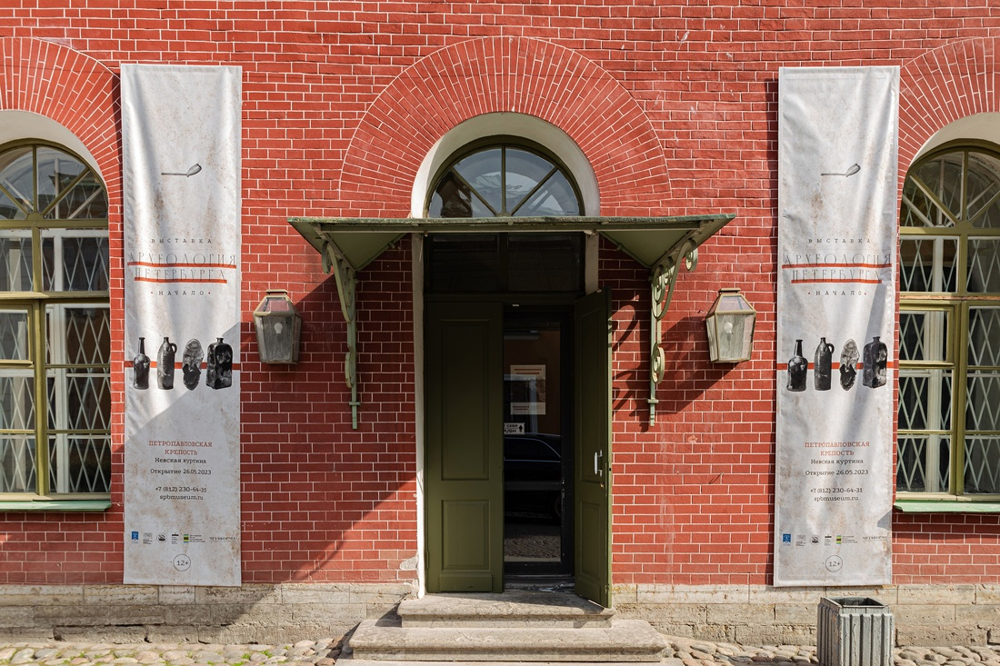

Выставка «Археология Петербурга. Начало» знакомит посетителей с первыми археологическими раскопками на территории Санкт-Петербурга. Эти работы были проведены в Таможенном переулке на Стрелке Васильевского острова в 1952 году по поручению Музея антропологии и этнографии Академии Наук СССР (Кунсткамера) под руководством молодого археолога Александра Даниловича Грача. Во время раскопок были найдеты старинные предметы быта XVIII века.
Также на выставке демонстрируются археологические предметы, относящиеся к массовым категориям находок, обнаруженные во время недавних раскопок Института истории материальной культуры РАН на территории Санкт-Петербурга.
Стоимость билетов:
200 рублей - взрослый,
120 рублей - льготный (школьники, студенты, пенсионеры).
Выставка участвует в проекте Пушкинская карта.
Билеты можно приобрести только в кассе ГМИ СПб или на выставке.
Летнее время работы (1 мая – 30 сентября):
ПН | ЧТ | ПТ | СБ | ВС: С 11:00 ДО 19:00Зимнее время работы (1 октября – 30 апреля):
ПН | ЧТ | ПТ | СБ | ВС: С 11:00 ДО 18:00Публикации о выставке в СМИ:
Видеорепортаж телеканала Санкт-Петербург об открытии выставки (26 мая 2023 года)